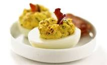

Deviled Eggs Recipe

Recipe Details
This tasty Deviled Eggs recipe is easy on time and energy! Whether
you want an easy to follow, or are looking for a delicious
Deviled Eggs recipe, this is the perfect recipe for you. The
ingredients needed are inexpensive and easy to get ahold of.
The cookware involved should also be relatively easy to get
ahold of. Good luck and enjoy!
Overview
- Cook: 10 mins
- Total: 40 min
- Prep: 30 mins
- Servings: 12
- Yield 24 Deviled Eggs
Ingredients
- 1 12 eggs
- ½ cup mayonnaise
- 4 slices bacon
- 2 tablespoons finely shredded Cheddar cheese
- 1 tablespoon mustard
Instructions
- Place eggs in a saucepan, and cover with cold water. Bring
water to a boil and immediately remove from heat. Cover, and
let eggs stand in hot water for 10 to 12 minutes. Remove from
hot water, and cool. To cool more quickly, rinse eggs under
cold running water.
- Meanwhile, place bacon in a large, deep skillet. Cook over
medium-high heat until evenly brown. Alternatively, wrap
bacon in paper towels and cook in the microwave for about 1
minute per slice. Crumble and set aside.
- Peel the hard-cooked eggs, and cut in half lengthwise.
Remove yolks to a small bowl. Mash egg yolks with mayonnaise,
crumbled bacon and cheese. Stir in mustard. Fill egg white
halves with the yolk mixture and refrigerate until serving.
Nutrition Facts
Per Serving: 643 calories; protein 41.3g;
carbohydrates 53.4g; fat 29.3g; cholesterol 108.3mg; sodium 707.3mg.